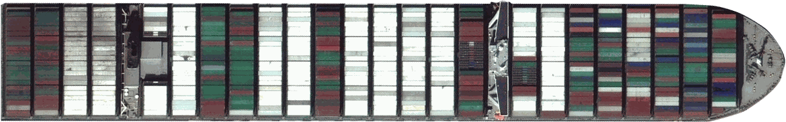

Le porte-conteneurs Ever Given (400 m de long) a bloqué le canal de Suez du 23 au 29 mars 2021. Activez « Navire à l'échelle » pour comparer sa taille réelle à la carte.
Image du navire : asset du remix Glitch d'origine, archivé le 28/11/2021 par la Wayback Machine. Licence non documentée.

Cette carte nécessite JavaScript. Activez-le, puis rechargez la page.